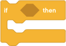
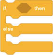
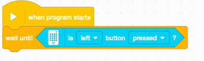

Lesson 3: The Better to See You With (Kinda)
Last session, we talked about decision making using the wait until and loop blocks. These blocks let us tell the robot to pause and keep repeating a set of actions until something happens, such as a touch sensor being bumped or repeating something a specific number of times. But what if we want the robot to take different actions based on what it senses or some other condition?
Let’s build on the example from last session. Instead of the robot always turning right, we want it to turn different directions depending on what color it sees:
- Drive forward
- Wait until we hit a wall
- If we see blue, then turn right. Otherwise, turn left.
- Go back to 1 to continue searching
In order to make the sort of decision in step 3, we’ll need to use conditional blocks.
Conditional Blocks
Like the Loop block, conditional blocks are a special type of block that can contain other blocks, and accepts an expression that evaluates to true or false when your program runs. You’ve already used sensor expressions with wait until s. When the sensor detected the condition (e.g. you pressed the left brick button or the touch tensor) was true, we are done waiting and the program continues running the next block.
{kind=link}
With an if/then

, the blocks you add to ‘if’ part of the condition will run only when the expression evaluates to true. Theif/then/else 
works the same, except that the blocks in the ‘else’ part will run when the condition evaluates to false.Color Sensor
{kind=link}
The Color sensor can identify and name a limited set of colors (the colors of certain LEGO bricks in your kit), measure the brightness of light around it, or to use its internal LED light to measure reflective intensity accurately. With this sensor your robot can “see” the world around it, at least in a very limited way.
The SPIKE Color sensor has two modes:
- Color mode: Sensor can detect LEGO brick colors only
- Reflected Light mode: Sensor can detect objects next to it: it sees in gray-scale only, but this can be used to differentiate one color from another in many cases
Most projects this season that use a Color Sensor will use the reflected light mode and related programming blocks. Our projects use materials that can be distinguished in this gray-scale mode.
Like all sensors, the sensor plugs into one of the ports (A-F) on the SPIKE brick.
When mounting the Color sensor on your robot to detect the color of a surface, mount it about between a half inch and three-quarters of an inch above the ground.
Another way to measure this is to take the smaller side of the 2x4 LEGO bricks in your kit. You can also check the readings on the Dashboard and try different heights to see what works best for your program. Too far away and the sensor will not work as you expect! See figure Figure 1.
{kind=link}
Attach the Color sensor to your brick and view the brightness of surfaces around the room with the SPIKE App.
Attach a wire from your Color sensor to a port on the intelligent brick.
Power on your brick and connect it to the SPIKE App.
Open the Dashboard by clicking the{.spike-app-connected-icon-in-dashboard-overview}. You’ll see the connected motors and sensors.
Dashboard with color sensor in color mode Click the drop down next to the color sensor to change it from color mode to
Reflected Light Intensitymode.Changing sensor mode in dashboard Color sensor in Reflected Light mode
Close the Dashboard. You can also see the sensor values in the Dashboard Overview at the top of the programming canvas. You might need to click the greater than symbol (
>) to expand the Overview so you can see the sensor readings.Color sensor value in Dashboard overview
Point the sensor at various surfaces, such as the table top or a metal table leg or the ILEO whiteboard arena and tape lines. Which is most reflective? Make sure to hold the sensor very close but not quite touching the surface.
{kind=link}
{kind=link}
{kind=link}
{kind=link}
Programming Exercise
Control your robot with color. Attach a color sensor to your robot. Use an if/then to detect when the color sensor detects green or blue. Move the robot forward or backward one rotation when it detects the color. The robot should not move unless green or blue are detected (or other LEGO brick colors from your kit).
Even though the robot should only move when the Color sensor detects color, lets take some precautions just in case we have bugs in our program. Continue to add the wait until left pressed (condition)

to the beginning of your program.Your program will flow something like this:
{kind=link}
The program loops forever, and it repeatedly checks above will wait for 2 seconds, and then look at the touch sensor. If it sees that it’s pressed, the robot follows the top path and plays the first sound. Otherwise, it follows the bottom path and plays the second sound instead.
Typically with our lessons, we use wait until s with sensors. Why doesn’t that work here?
Troubleshooting the Color Sensor
If the reflected light values for the objects your robot detects are too close together, this can make your program malfunction. First check that the color sensor is properly mounted to the robot:
- It is about 2 stacked pennies off the surface it is detecting.
- Ambient light in the room might affect sensor readings. Surrounding the end of the sensor with painters tape (or other opaque material) can help shield the sensor from lights elsewhere in the room.
- Make sure the sensor is secure and it or the robot base are not bouncing around as the robot moves, which leads to unreliable readings.
- Sensor readings can vary slightly as your program runs. So allow for this in your program. Instead of checking for an exact value like 85, check for a range of values like greater than 75 and less than 95. It will be important that each object you try to identify with the sensor is different. If a green tape line reads around 85, and a blue tape line reads around 90, the program could mistake one color for the other.
As the lighting level can vary in different places, the readings from your Color sensor can vary. In the worst case you might have to change the intensity values you use in every condition or wait until block in your program that uses the color sensor. With calibration, you should only need to change those two blocks and the values used by the rest of the program should remain (though not guaranteed). Using variables for the important color values is another way to make your program easier to adjust. We discuss variables in later lessons.
SPIKE App does not offer any calibration options as in previous MINDSTORMS programming software. Some math could be performed to manually perform calibration and potentially improve the readings you receive. This will be covered in a separate document named “Calibration”.